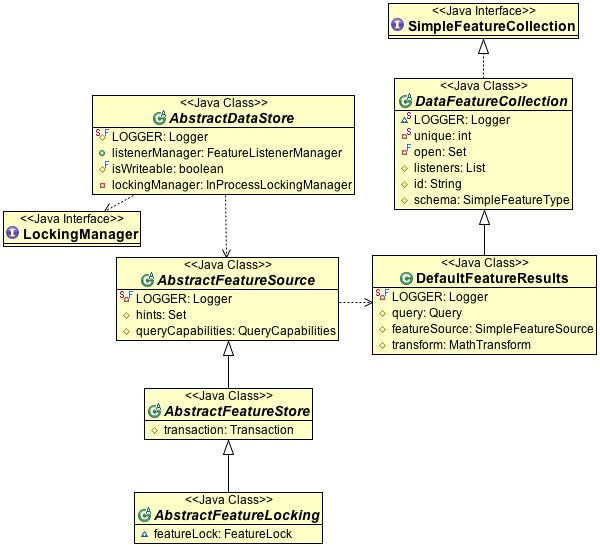

Internals¶
The gt-main class holds a number of internal and abstract classes useful to those implementing support for additional DataStore formats. These classes should be moved to gt-data when time permits.
he gt-main module provides many well known classes covered in the public documentation:
- DataAccessFinder
- DataStoreFinder
- FileDataStoreFinder
- DataUtilities
- DefaultRepository
- DefaultTransaction
- DefaultView
A few public exceptions:
- FeatureLockException
- SchemaNotFoundException
And a couple that are no longer used:
- DefaultFeatureLock
- DefaultFeatureLockFactory
- DefaultQuery
AbstractDataStore¶
The AbstractDataStore is an old base class for DataStore implementations, currently used only by MemoryDataStore and PropertyDataStore. All new stores use ContentDataStore instead.
This class is helpful starting point, however we have taken the lessons learned and wrapped them up in ContentDataStore covered in the gt-data documentation.
The following classes are related:
- AbstractDataStore
- AbstractDataStoreFactory
- AbstractDataStoreTest
- AbstractFeatureSource
- AbstractFeatureStore
- AbstractFeatureLocking
- DefaultFeatureResults - the original name of FeatureCollection was FeatureResults!Simpl
References:
- AbstractDataStore Tutorial (tutorial)
DataStore¶
There are a large number of DataStore helper classes in gt-main.
Default implementations:
- DefaultResourceInfo
- DefaultServiceInfo
FileDataStore
- AbstractFileDataStore
Conformance test case:
- DataTestCase
Managers
These managers, with their supporting readers and writers are responsible for AbstractDataStore being able wrap transaction and locking support around you work.
- FeatureListenerManager
- InProcessLockingManager
Transaction Implementation
You can store a TransactionStateDiff in a Transaction, the DiffFeatureReader and DiffFeatureWriters will collect any changes for you in memory which you can review when the user calls commit.
- TransactionStateDiff
- Diff
- DiffFeatureReader
- DiffFeatureWriter
Projection File
- PrjFileReader
- WorldFileReader
- WorldFileWriter
FeatureCollection¶
Lots of abstract and utility classes are available when working with FeatureCollection:
- AbstractFeatureCollection.
- AbstractFeatureVisitor
- AdaptorFeatureCollection
- DecoratingFeatureCollection
- DecoratingSimpleFeatureCollection
- DelegateFeatureIterator
- DelegateSimpleFeatureIterator
- FilteringSimpleFeatureCollection
- MaxSimpleFeatureCollection
- SubFeatureCollection / FilteredIterator
- SubFeatureList
FeatureCollections often form a pair with the iterator they use to make contents available: * DataFeatureCollection / FeatureWriterIterator / FeatureReaderIterator * EmptyFeatureCollection / EmptyIterator * FilteringFeatureCollection / FilteringFeatureIterator * MaxFeaturesFeatureCollection / MaxFeaturesIterator * ReprojectingFeatureCollection / ReprojectingIterator * ReTypingFeatureCollection / ReTypingIterator
And the lower level iterator helpers:
- SimpleFeatureIteratorImpl - used by DefaultFeatureCollection to access all contents
- FeatureIteratorImpl
- NoContentIterator - used to throw an exception on next()
- FilteringIterator
- FeatureIteratorIterator
- FeatureReaderFeatureIterator
- FeatureWriterFeatureIterator
FeatureReader¶
Low-level implementation support for implementing FeatureReader.
- DefaultFeatureReader
- DefaultFIDReader
- EmptyFeatureReader
- EmptyFeatureWriter
These readers wrap around your simple FeatureReader and add additional functionality such as filtering:
- DelegatingFeatureReader
- DelegatingFeatureWriter
- FIDFeatureReader
- FIDReader
- FilteringFeatureReader
- FilteringFeatureWriter
- MaxFeatureReader
- ReTypeFeatureReader
- ForceCoordinateSystemFeatureReader
- ForceCoordinateSystemFeatureResults
- ReprojectFeatureReader
- ReprojectFeatureResults
A few even work on iterators:
- CollectionFeatureReader
- ForceCoordinateSystemIterator
- ReprojectFeatureIterator
Where general facilities are available we need SimpleFeature implementations:
- DelegateSimpleFeatureReader
- DelegatingSimpleFeatureWriter
- EmptySimpleFeatureReader
- FilteringSimpleFeatureReader
AttributeReader¶
Sub-zero: These are not used in practice they were intended to be used for attribute level operations; in practice everyone works directly with features. The only place where they are used is with the Shapefile implementation where they are used to “join” the attributes from the shp and dbf files.
- AbstractAttributeIO
- AttributeReader
- AttributeWriter
- JoiningAttributeReader
- JoiningAttributeWriter
Wrappers¶
Wrappers used by DataUtilities to morph to SimpelFeatureSource, SimpleFeatureCollection etc...
- SimpleFeatureCollectionBridge
- SimpleFeatureLockingBridge
- SimpleFeatureSourceBridge
- SimpleFeatureStoreBridge
Open Web Services¶
Some of the data structures used by open web services such as WMS and WFS are defined here, when we are happy with them they will be published as part of gt-api.
XML¶
Some of the SAX, DOM and Transform classes for handling are defined in gt-main.
Their use for XML and GML handling will be covered in gt-xml.